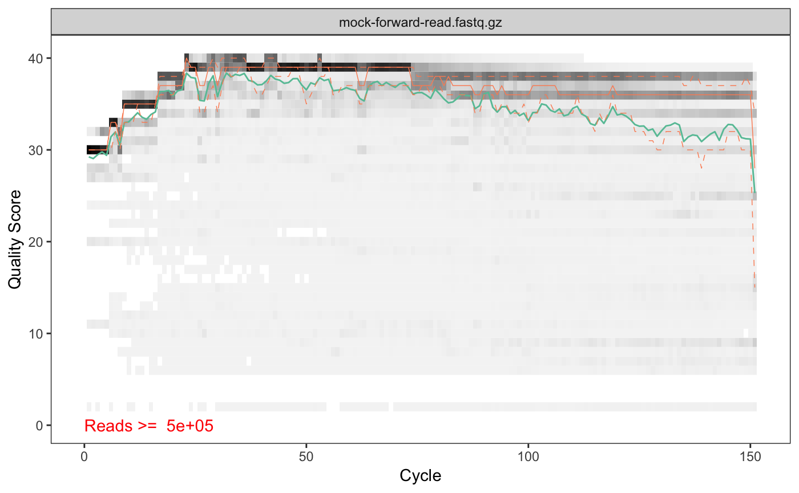
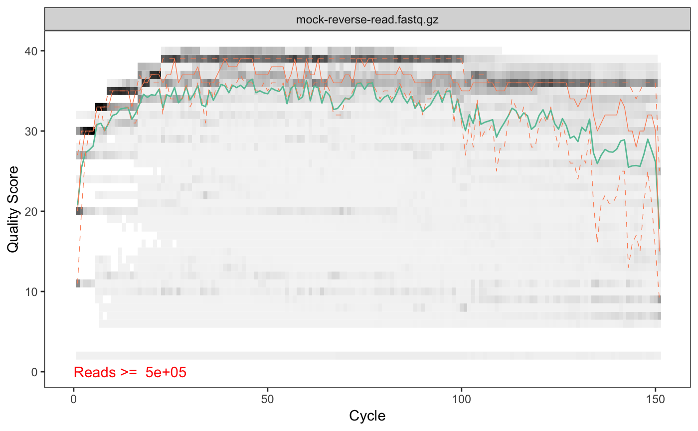
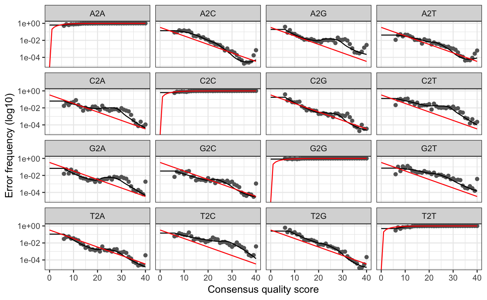
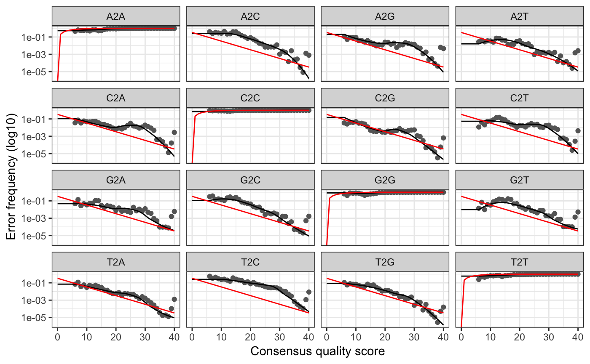
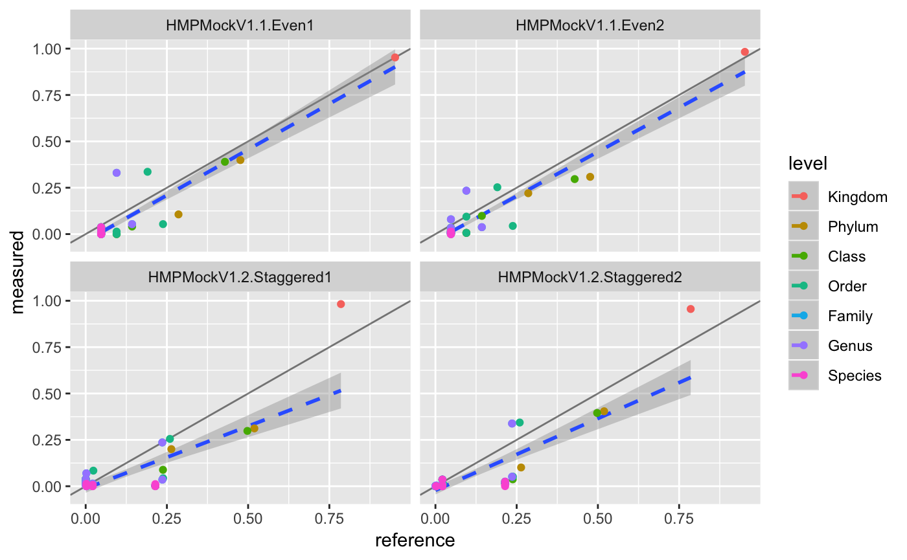

For installation instructions please see https://github.com/cdiener/microbiome. We recommend using the docker image in the cloud or locally as this ensures that all requirements are fulfilled in the correct version.
Loading dependencies
In order to facilitate use of the pipeline we provide the mbtools R package in this repository which serves two major purposes:
- It implements additional helper functions for the analysis and benchmarking of microbial community data.
- It depends on all additional packages required for analysis and load them upon import.
So loading mbtools should be the first step when running the analysis
## Also loading: dada2 1.8.0
## Also loading: data.table 1.11.4
## Also loading: ggplot2 3.0.0
## Also loading: magrittr 1.5
## Also loading: phyloseq 1.24.2
## Also loading: ShortRead 1.38.0
## Also loading: yaml 2.2.0##
## Attaching package: 'mbtools'## The following object is masked _by_ 'package:BiocGenerics':
##
## normalizeGetting the mock community data
mbtools includes helper functions to obtain benchmark mock data sets from the mockrobiota database. For instance to download the mock-3 data set (relatively small) we can use
if (!file.exists("mock4.rds")) {
mock <- mockrobiota("mock-4", "mock4")
saveRDS(mock, "mock4.rds")
} else mock <- readRDS("mock4.rds")Here mock now includes annotations for the data set as a list.
## [1] "description" "forward" "reverse" "index" "citation"
## [6] "fragment" "equipment" "samples" "ps_gg" "ps_silva"## SampleID BarcodeSequence
## HMPMockV1.1.Even1 HMPMockV1.1.Even1 TGTACGGATAAC
## HMPMockV1.1.Even2 HMPMockV1.1.Even2 CAAATGGTCGTC
## HMPMockV1.2.Staggered1 HMPMockV1.2.Staggered1 AATCAACTAGGC
## HMPMockV1.2.Staggered2 HMPMockV1.2.Staggered2 ACACATAAGTCG
## LinkerPrimerSequence ReversePrimer
## HMPMockV1.1.Even1 GTGCCAGCMGCCGCGGTAA GGACTACHVGGGTWTCTAAT
## HMPMockV1.1.Even2 GTGCCAGCMGCCGCGGTAA GGACTACHVGGGTWTCTAAT
## HMPMockV1.2.Staggered1 GTGCCAGCMGCCGCGGTAA GGACTACHVGGGTWTCTAAT
## HMPMockV1.2.Staggered2 GTGCCAGCMGCCGCGGTAA GGACTACHVGGGTWTCTAAT
## PrimerName Description
## HMPMockV1.1.Even1 515f-806r Nenehozi
## HMPMockV1.1.Even2 515f-806r Tofekoca
## HMPMockV1.2.Staggered1 515f-806r Kalofiyo
## HMPMockV1.2.Staggered2 515f-806r PewizifoPreparing the reads
As we can see we have 3 read files, the forward and backward reads and one index file mapping the sample barcodes to the sequences. However, we have 4 samples: a uniform and staggered community in duplicates each. In order to map sequence variants to samples dada2 expects read files to be separated by sample. mbtools includes helper functions to obtain this splitting.
reads <- c(mock$forward, mock$reverse)
barcodes <- mock$samples$BarcodeSequence
names(barcodes) <- mock$samples[,1]
bcs <- split_barcodes(reads, mock$index, "split", barcodes)
fwd <- list.files("split", pattern="forward", full.names=T)
bwd <- list.files("split", pattern="reverse", full.names=T)
fwd## [1] "split/HMPMockV1.1.Even1_mock-forward-read.fastq.gz"
## [2] "split/HMPMockV1.1.Even2_mock-forward-read.fastq.gz"
## [3] "split/HMPMockV1.2.Staggered1_mock-forward-read.fastq.gz"
## [4] "split/HMPMockV1.2.Staggered2_mock-forward-read.fastq.gz"As we see that now gives us the reads separated by sample. The orginal read still include some valid information, particularly they include the read qualities across all samples.


As we can see both qualities detoriate extremely with read lengths. Thus, we will have to trim the reads. From the plots we can see that the forward reads have decent quality up to a length of 150 bp whereas the reverse reads are acceptable up to 100 bp.
## Warning in dir.create("filtered"): 'filtered' already existsfwd_filt <- file.path("filtered", basename(fwd))
bwd_filt <- file.path("filtered", basename(bwd))
filt <- filterAndTrim(fwd, fwd_filt, bwd, bwd_filt,
trimLeft=10, truncLen=c(140, 100),
compress=T, multithread=T)
filt## reads.in reads.out
## HMPMockV1.1.Even1_mock-forward-read.fastq.gz 1236898 1216195
## HMPMockV1.1.Even2_mock-forward-read.fastq.gz 808308 797208
## HMPMockV1.2.Staggered1_mock-forward-read.fastq.gz 838791 825665
## HMPMockV1.2.Staggered2_mock-forward-read.fastq.gz 918465 905396We will follow by dereplicating the reads which will yield the unique sequences in the samples.
## Dereplicating sequence entries in Fastq file: filtered/HMPMockV1.1.Even1_mock-forward-read.fastq.gz## .Encountered 95580 unique sequences from 1216195 total sequences read.
## Dereplicating sequence entries in Fastq file: filtered/HMPMockV1.1.Even2_mock-forward-read.fastq.gz
## Encountered 72797 unique sequences from 797208 total sequences read.
## Dereplicating sequence entries in Fastq file: filtered/HMPMockV1.2.Staggered1_mock-forward-read.fastq.gz
## Encountered 76415 unique sequences from 825665 total sequences read.
## Dereplicating sequence entries in Fastq file: filtered/HMPMockV1.2.Staggered2_mock-forward-read.fastq.gz
## Encountered 72114 unique sequences from 905396 total sequences read.## Dereplicating sequence entries in Fastq file: filtered/HMPMockV1.1.Even1_mock-reverse-read.fastq.gz
## .Encountered 106375 unique sequences from 1216195 total sequences read.
## Dereplicating sequence entries in Fastq file: filtered/HMPMockV1.1.Even2_mock-reverse-read.fastq.gz
## Encountered 68054 unique sequences from 797208 total sequences read.
## Dereplicating sequence entries in Fastq file: filtered/HMPMockV1.2.Staggered1_mock-reverse-read.fastq.gz
## Encountered 80575 unique sequences from 825665 total sequences read.
## Dereplicating sequence entries in Fastq file: filtered/HMPMockV1.2.Staggered2_mock-reverse-read.fastq.gz
## Encountered 70459 unique sequences from 905396 total sequences read.Obtaining the sequence variants (sequence OTUs)
With the trimmed and dereplicated reads we can now advance to running the dada2 algorithm to discover the unique sequence variants in our reads. We will do this separately for the forward and backward reads.
## Initializing error rates to maximum possible estimate.
## selfConsist step 1 ....
## selfConsist step 2
## selfConsist step 3
## selfConsist step 4
## selfConsist step 5
## selfConsist step 6
## selfConsist step 7
## selfConsist step 8
## Convergence after 8 rounds.## Initializing error rates to maximum possible estimate.
## selfConsist step 1 ....
## selfConsist step 2
## selfConsist step 3
## selfConsist step 4
## selfConsist step 5
## selfConsist step 6
## selfConsist step 7
## Convergence after 7 rounds.This will fit an error model that deconvolutes the original sequence variants in the sample. We can investigate how well the error model reproduces our data as well.
## Warning: Transformation introduced infinite values in continuous y-axis
## Warning: Transformation introduced infinite values in continuous y-axis
We will now quantify the sequence variants for both samples and combine them. Normally we would try to actually combine the forward and backwards reads into larger reads and quantify those, however our read qualities were so bad in this data set that there is no sufficient overlap. Thus, we will treat the forward and backward reads independently.
seqtab_fwd <- makeSequenceTable(dadaFs)
seqtab_bwd <- makeSequenceTable(dadaRs)
seqtab <- cbind(seqtab_fwd, seqtab_bwd)Finally, we will also remove bimeras (reads that are combinations of two other reads) from the data set. We will also save the sequence table for later use.
## Identified 292 bimeras out of 432 input sequences.Taxonomy assignment and validation
In order to classify taxonomies for the individual sequence variants we will use the RDP algorithm with the green genes reference sequences. If you do not use the docker image this data set has to be downloaded first from here.
if (!file.exists("gg_138.fa.gz"))
download.file("https://zenodo.org/record/158955/files/gg_13_8_train_set_97.fa.gz",
"gg_138.fa.gz")Taxonomies can now be assigned by
taxa <- assignTaxonomy(seqtab_nochim, "gg_138.fa.gz", multithread=TRUE)
colnames(taxa) <- c("Kingdom", "Phylum", "Class", "Order", "Family", "Genus", "Species")
head(unname(taxa))## [,1] [,2] [,3]
## [1,] "k__Bacteria" "p__Firmicutes" "c__Bacilli"
## [2,] "k__Bacteria" "p__Proteobacteria" "c__Gammaproteobacteria"
## [3,] "k__Bacteria" "p__Firmicutes" "c__Bacilli"
## [4,] "k__Bacteria" "p__Proteobacteria" "c__Alphaproteobacteria"
## [5,] "k__Bacteria" "p__Proteobacteria" "c__Gammaproteobacteria"
## [6,] "k__Bacteria" "p__[Thermi]" "c__Deinococci"
## [,4] [,5] [,6]
## [1,] "o__Bacillales" "f__Staphylococcaceae" "g__Staphylococcus"
## [2,] "o__Pseudomonadales" "f__Moraxellaceae" "g__Acinetobacter"
## [3,] "o__Lactobacillales" "f__Streptococcaceae" "g__Streptococcus"
## [4,] "o__Rhodobacterales" "f__Rhodobacteraceae" "g__Rhodobacter"
## [5,] "o__Enterobacteriales" "f__Enterobacteriaceae" "g__Escherichia"
## [6,] "o__Deinococcales" "f__Deinococcaceae" "g__Deinococcus"
## [,7]
## [1,] "s__"
## [2,] "s__guillouiae"
## [3,] "s__"
## [4,] "s__sphaeroides"
## [5,] "s__coli"
## [6,] "s__"Since we used the green genes database there are some assignments which are actually empty such as the "s__" species. We will convert them to their correct NA value.
The taxa assignments can be combined with quantifications using the phyloseq package.
We can now compare this table to our reference table from mockrobiota. We will start by quantifying how many of the real taxa were found in our taxonomy assignment.
## level precision recall F1 n_exp n_ref
## 1 Kingdom 1.0000000 1.00 1.0000000 2 2
## 2 Phylum 0.8571429 1.00 0.9230769 7 6
## 3 Class 0.8333333 1.00 0.9090909 12 10
## 4 Order 0.6666667 1.00 0.8000000 18 12
## 5 Family 0.6666667 1.00 0.8000000 27 18
## 6 Genus 0.6666667 1.00 0.8000000 27 18
## 7 Species 0.5294118 0.45 0.4864865 17 20As we can see we are pretty good in identifying the taxa in our samples. However, how do we perform in terms of taxa quantities? We will start by stratifying across the samples:
## level name sample measured reference
## 1 Kingdom k__Bacteria HMPMockV1.1.Even1 0.952576814 0.95238095
## 2 Kingdom k__Archaea HMPMockV1.1.Even1 0.018616473 0.04761905
## 3 Kingdom k__Bacteria HMPMockV1.1.Even2 0.982652731 0.95238095
## 4 Kingdom k__Archaea HMPMockV1.1.Even2 0.001401979 0.04761905
## 5 Kingdom k__Bacteria HMPMockV1.2.Staggered1 0.982056771 0.78563773
## 6 Kingdom k__Archaea HMPMockV1.2.Staggered1 0.001586491 0.21436227taxa_quants already quantifies across a possible levels of taxonomy. So we can plot the performance stratified by sample with
ggplot(tq, aes(x=reference, y=measured, col=level)) +
geom_abline(alpha=0.5) +
geom_smooth(aes(group=1), method="lm", lty="dashed") +
geom_point() +
facet_wrap(~ sample)
This plot is so common that it is also implemented in mbtools as mock_plot.
Additionally, we can also combine all samples and rather stratify by taxonomy level.
ggplot(tq, aes(x=reference, y=measured, col=sample)) +
geom_abline(alpha=0.5) +
geom_smooth(aes(group=1), method="lm", lty="dashed") +
geom_point() +
theme(legend.position="bottom") +
facet_wrap(~ level, scale="free")
This looks pretty ok with larger variations on the species level, which is to be expected. We can quantify the performance by a correlation test.
##
## Pearson's product-moment correlation
##
## data: tq$measured and tq$reference
## t = 27.086, df = 298, p-value < 2.2e-16
## alternative hypothesis: true correlation is not equal to 0
## 95 percent confidence interval:
## 0.8071293 0.8731521
## sample estimates:
## cor
## 0.8432932So we get a correlation of about 0.85 which is okay for the bad quality reads we used here.